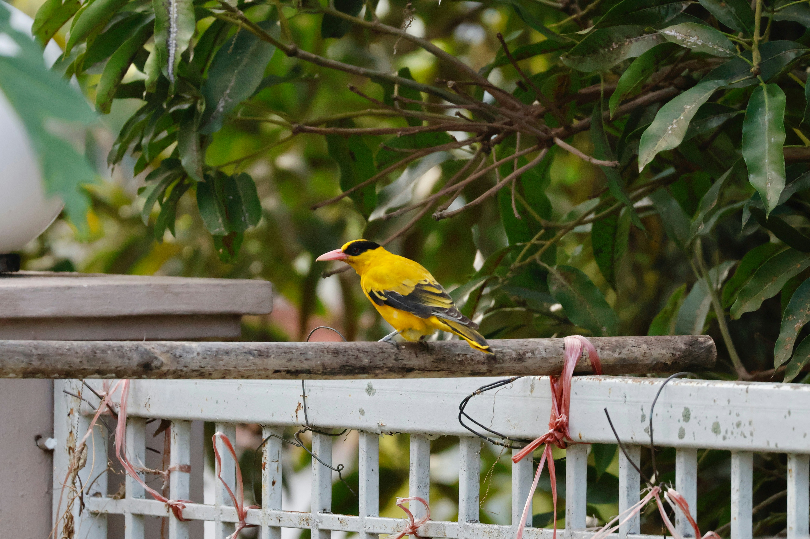

The Black-Naped Oriole is a bright yellow-and-black songbird with a dark stripe through the eye and nape. It spends most of its time in trees and feeds on fruit, nectar, and insects. Its melodious whistles are often heard from the canopy before the bird is visible. It is associated with forests, plantations, gardens, and wooded urban areas.